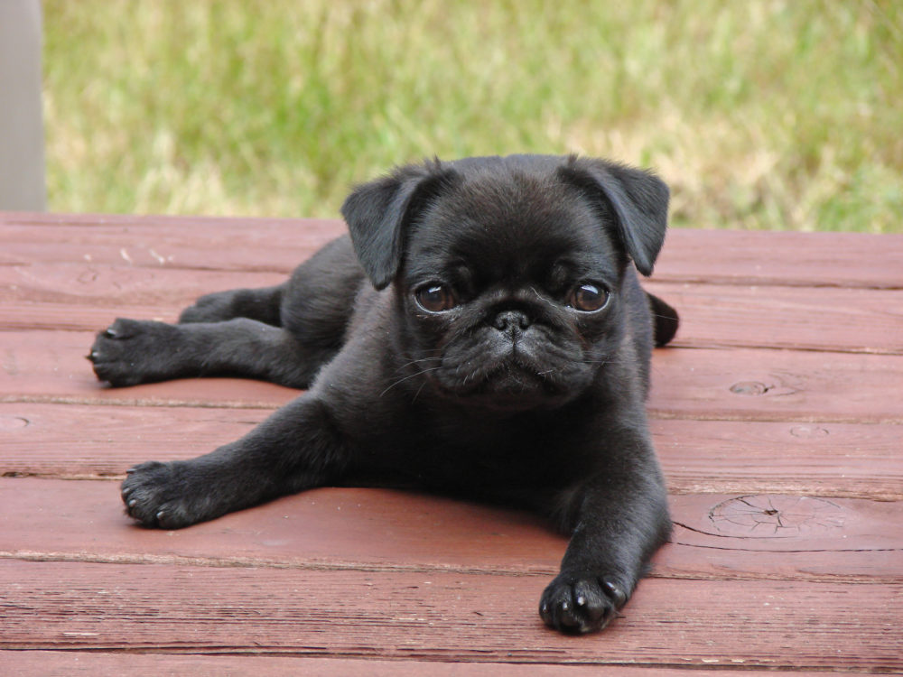

Pug
Os Pugs, com suas expressões adoráveis e corpos compactos, são uma raça de cães cheia de personalidade. Originários da China, eles cativam com sua natureza afetuosa e brincalhona. Seus olhos expressivos e focinhos enrugados os tornam companheiros encantadores para todas as idades.
voltar
